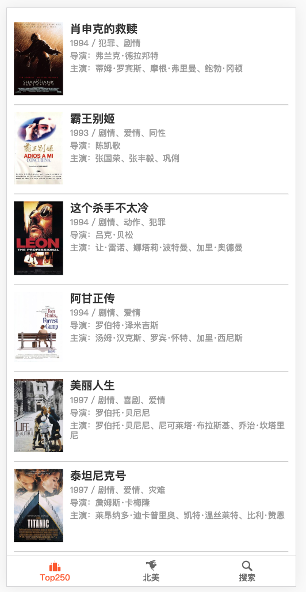
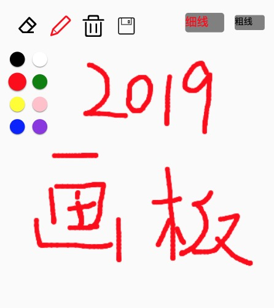
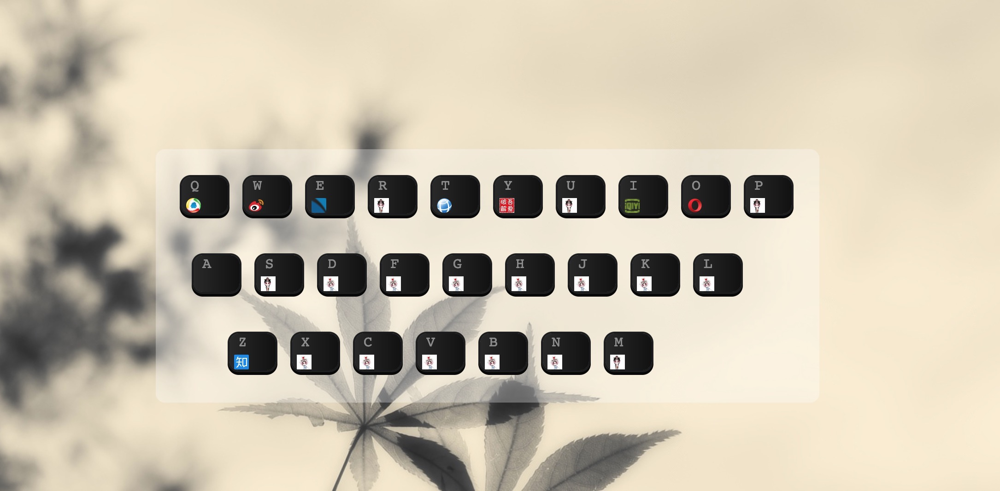

项目经历
模仿豆瓣项目
- 项目介绍： 一个移动端豆瓣电影推荐入口，展示 Top250和北美排行电影列表，可搜索电影。
- 技术栈：vue、vue-router、jquery、webpack、es6、ajax、axios、webpack、移动端
- 项目成果: 分别采用jquery和vue仿造豆瓣电影项目，在此过程中熟悉了jquery和vue常用的操作方法和规范。
- 该项目遇到的问题：1）初次使用axios时，发现不能正常获取数据，google查询原因为跨域问题，尝试了修改URL，修改get请求头等方法始终不能正确得到数据，最后采用代理方式解决此问题
- 2)代码上传至github后通过预览方式后发现HTTPS页面里动态的引入HTTP资源，不能正常获取数据，尝试iframe,将https改为http均不能解决此问题，百度搜索后解决方案为在将http升级为https后解决
- 采用jquery编写的代码链接
- 采用vue框架编写的代码链接
-
项目预览链接

仿建cnode社区
- 项目介绍： 该项目是我学习vue中仿造别人的项目，通过该项目掌握了vue的基础知识。
- 使用的相关技术：vue、vue-router,JSON、webpack、es6
- 代码链接
- 通过该项目，我掌握了vue.js计算属性，内置指令和事件的绑定，自定义事件的触发，vue-router路由的跳转和监听，父子组件的通讯 。
Canvas画板
- 项目介绍：能在手机端和PC电脑端画图的小工具 。
- 技术栈：jquery,JavaStrap,canvas
- 采用jquery，面向对象方式编写的github链接
- 项目采用原生JS预览链接
- 项目成果: 分别采用jquery和JS搭建的canvas项目，在此过程中熟悉了canvas常用的API方法和规范。
-
项目预览链接

导航网站
- 项目介绍： 建立了一个页面的导航网站，将所要保存的网站保存到localStorage中。
- 采用原生JS编写的github链接
- 采用jquery编写的代码链接
-
项目预览链接

教育经历
2004~2008
湖南工程学院
电气工程及其自动化
多次获得奖学金，成绩排名专业前10%;曾获大学生电子设计竞赛湖南赛区一等奖。